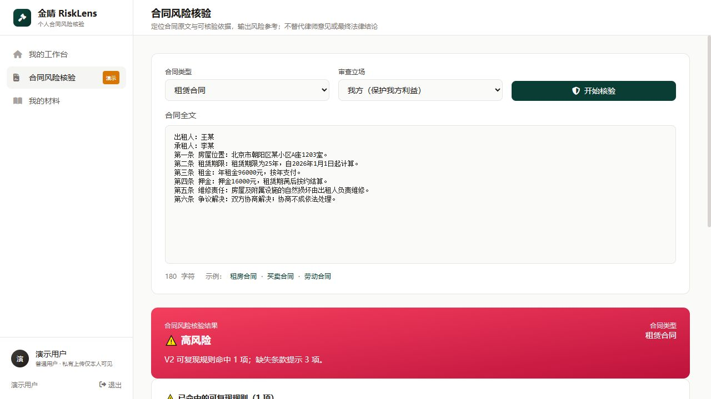
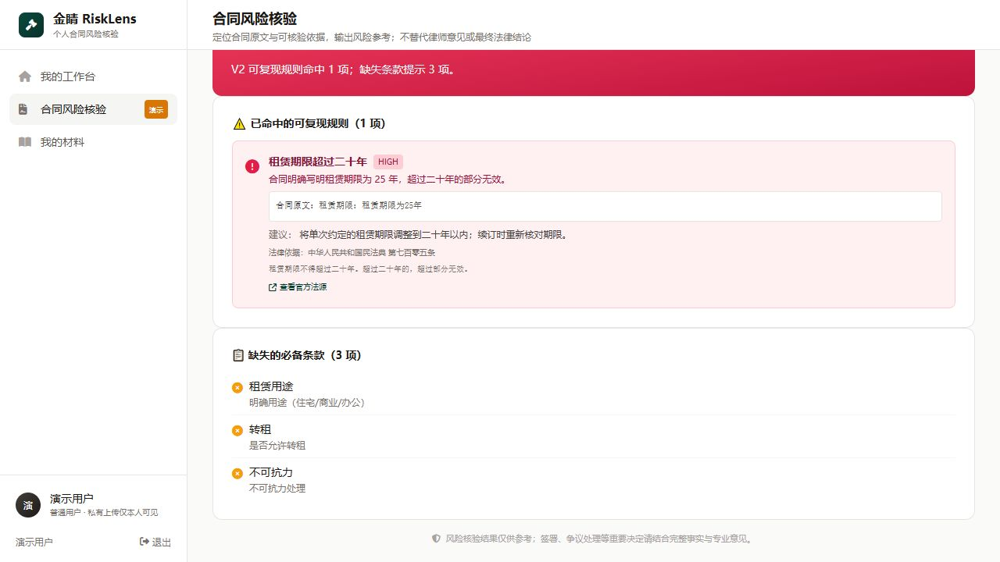

GOAI 无界应用｜答辩展示
让不懂法律的人
看见风险，也看见依据
金睛 RiskLens｜租赁合同 · 买卖／消费合同 · 经济纠纷材料梳理
离线答辩演示｜真实软件截图与可核验材料
金睛 RiskLens
02
普通个人需要的不是一段答案，而是一条可核验的处理路径
聚焦合同签订与日常经济纠纷中，能够由材料核验支撑的高频任务。
01
租房签约
押金、维修、提前退租、违约条款。
02
买卖／消费
履约、退款、质量争议、责任划分。
03
发生纠纷
事实材料、证据要素与专业分流。
从材料进入，到风险提示、依据定位和需要补充的要素，形成可回看的闭环。
场景演示
03
场景解析：把一份租房合同，变成可核对的风险清单
本地演示合同包含“租赁期限为 25 年”的可验证条款。

输入
用户选择租赁合同并粘贴全文
系统读取合同类型、文本事实与缺失要素；无法由文本确认的事实不补全。
目标
先把“原文里有什么、需要核对什么”说明白。
结果交付
04
结果交付：每一项提示都回到原文与法源
本地真实结果展示原文、规则、法条条文与官方链接；不输出最终法律结论。

01定位原文命中的风险规则保留合同中的原始文字。
02法源回链展示《民法典》第七百零五条及官方法源入口。
03标识边界缺失条款单独列出，不把未知事实当成结论。
可信推理
05
不是一次生成，而是“检索—分析—核验—过滤”
评委建议一：把法律“参考”的边界和来源链完整展示。
01受控检索从授权材料与受控知识源取回候选依据。
02A1 焦点识别识别争议焦点与需要核对的事实。
03A2 法律分析基于焦点和候选依据生成分析草案。
04A3 引用核验逐项核对引用是否能在召回材料中定位。
05整合输出剔除未通过引用，呈现依据与核验摘要。
未通过引用核验的内容，不作为对外结果。
安全边界
06
安全不是附加功能：它决定法律类 AI 能不能被信任
从输入、依据、账号到产品表述，逐层防止越权与误导。
输入与材料
上传内容视为不可信数据，防止材料中的指令越权。
→
应对提示注入／Agent 劫持
依据与输出
引用逐项核验；无法定位来源的内容不进入交付。
→
应对幻觉与错误引用
账号与数据
按用户授权访问私有材料；最小化处理、支持删除。
→
应对数据暴露与越权
产品表述
风险参考不替代律师、法院、授信或理赔机构结论。
→
防止夸大能力与误导使用
NIST 2025 年提示 Agent 劫持风险；FTC 2025 年限制“AI 律师可替代专业服务”的误导性宣传。
来源：NIST Agent Hijacking Evaluations (2025)；U.S. FTC DoNotPay case (2025)
竞品定位
07
RiskLens 的角色不是替代，而是把“可信核验”补进流程
比较的是产品角色与交付方式，不对其他产品作未经验证的性能断言。
通用 AI
（如豆包等）
开放式问答与文本生成；用户自行判断依据与适用边界。
律师／法务
专业法律意见与责任；适用于需要专业判断、代理与复杂事实核实的任务。
法律检索软件
查法条、查案例、查资料；用户自行综合判断并组织材料。
RiskLens
面向普通个人的材料核验：依据定位、引用核验、边界提示与专业交接。
核心优势：把“材料—依据—风险提示—专业交接”做成普通人可使用、可回看的工作流。
问题与解法
08
遇到的问题，不靠“更会说”解决，而靠更强的约束与验证
把不确定性暴露出来，才能避免把模型输出包装成事实。
问题 1
生成内容可能有貌似合理却无法定位的引用。
→
引用核验，未通过即过滤。
问题 2
风险建议缺少逐条证据时容易越界。
→
A4 暂停进入对外报告，先保留可审计链路。
问题 3
融资评测不能证明个人合同场景效果。
→
个人场景采用独立评测集与独立口径。
问题 4
真实判例来源与标注不足，不能宣传准确率。
→
建立盲测流程，结果产生前不公布能力指标。
评委建议
09
两条评委建议，转化为两组可核验的产品改动
不止回应建议，更把建议写进产品机制与评测设计。
建议一
产品边界与可信推理
明确法律“参考”与“建议”的定位及免责边界；用查询、推理、来源溯源演示可信度。
来源回链 · A3 引用核验 · 越权结果拦截
建议二
聚焦场景与量化评测
收敛至高频任务；对照人工专家、传统检索／RAG 与产品，公布核心指标。
租赁优先 · 独立评测集 · 盲测与人工复核
盲测设计
10
裁判文书网盲测：先把规则锁定，再讨论结果
当前状态：盲测尚未执行；以下为避免选择性展示的预注册式设计。
01
样本冻结
租赁争议公开文书；脱敏并隐藏裁判结果。
02
标准答案
判决要点、引用规则与人工标注共同形成金标准。
03
三组对照
人工专家｜传统检索／RAG｜RiskLens。
04
统一评分
法规召回率、错误引用率、重大风险漏检率、证据定位正确性。
05
复核发布
双盲评分；分歧进入复核；保留版本与评分记录。
状态：尚未执行｜不展示任何未产生的准确率
公开案例仅作为标准答案来源，不表示中国裁判文书网为产品背书。
金睛 RiskLens
让法律类 AI
更可用，也更可信
普通人看得懂的风险提示，必须经得起来源、边界与验证的检查。
离线答辩演示｜键盘 ← → 或下方按钮切换